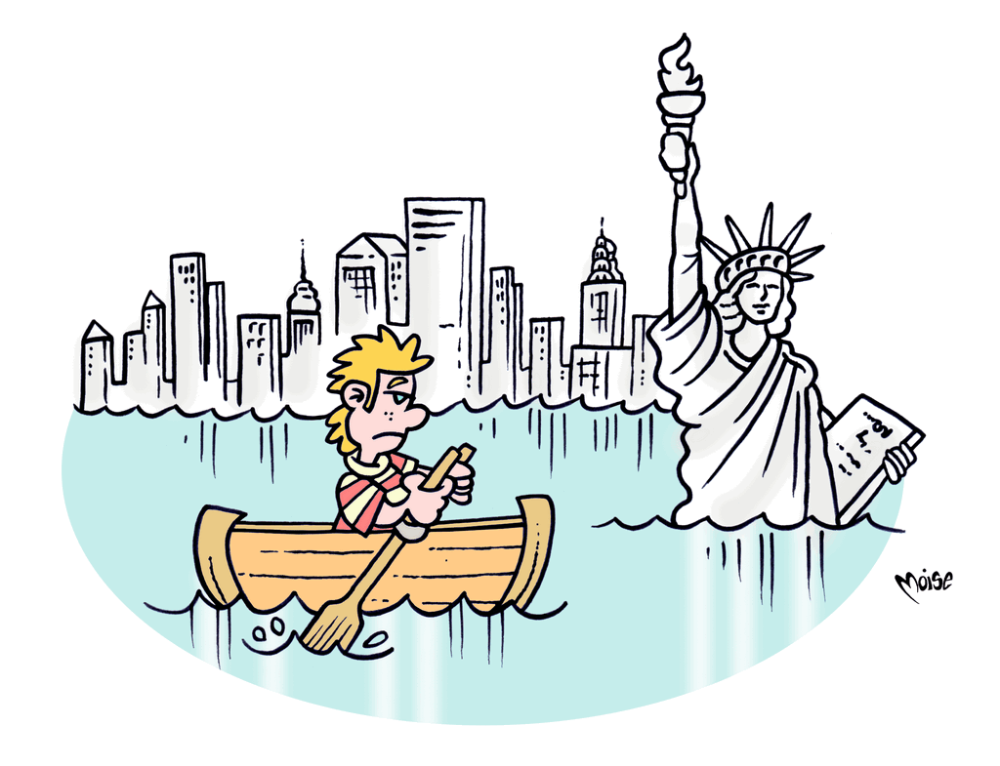

I cambiamenti climatici provocano un aumento della siccità e della desertificazione in alcune regioni del mondo e della frequenza di eventi estremi (alluvioni, tempeste, ondate di freddo e di caldo) in altre; inoltre favoriscono la diffusione di epidemie...
I combustibili fossili provvedono a oltre l'85% del fabbisogno mondiale di energia.
La domanda è in costante aumento e l'equilibrio ambientale è molto fragile. Una delle strade da percorrere per sostenerlo è dare impulso allo sviluppo delle energie rinnovabili e a sistemi innovativi di produzione energetica,
nonché favorire intervento, progetti e comportamenti tali da risparmiare e recuperare energia. Questo consentirà di ridurre le emissioni dei gas e degli inquinanti che possono rendere irrespirabile l'atmosfera della nostra... serra.

Soluzione
La parola nascosta, come vedi, è effetto serra e il meccanismo in gioco con cui è stata celata è
l’acrostico. Trovi la soluzione leggendo la prima lettera di ogni riga, dall’alto in basso (vedi schema).